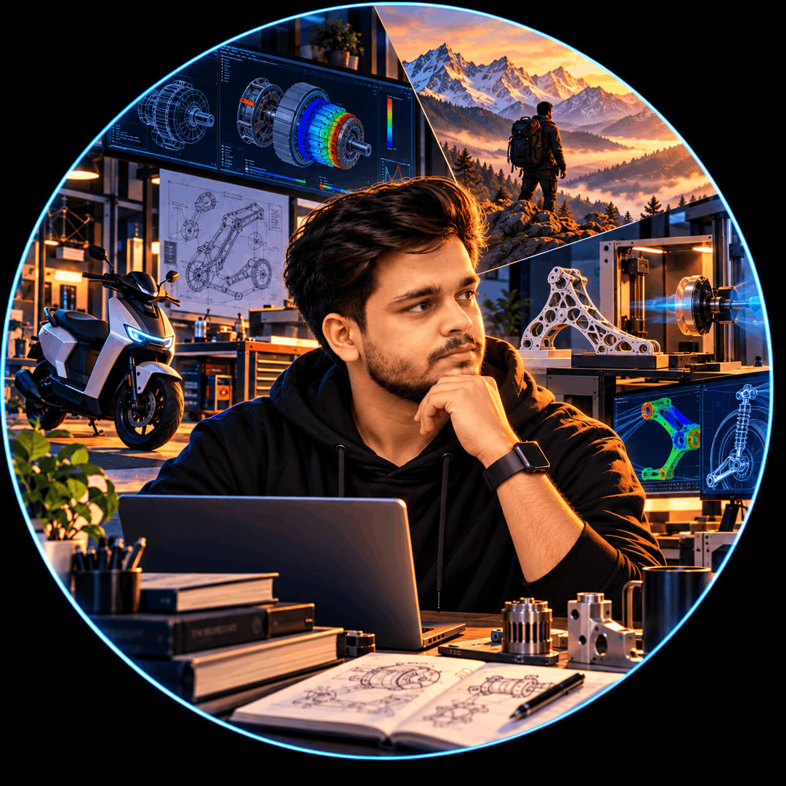

Mechanical Design
Product design, CAD modelling, engineering drawings, GD&T, structural analysis, and design for manufacturing.
ENGINEERING · RESEARCH · PRODUCT DEVELOPMENT
I work at the intersection of mechanical engineering, electric mobility, materials research, and product development. My work spans engineering design, validation, manufacturing, and translating technical concepts into practical products.

AREAS OF WORK
Combining engineering fundamentals with hands-on product development and experimental validation.
Product design, CAD modelling, engineering drawings, GD&T, structural analysis, and design for manufacturing.
Electric vehicle systems, chassis and suspension, component integration, testing, reliability, and validation.
Dissimilar-metal joining, TIG and P-TIG welding, microstructural characterisation, and mechanical testing.
FEA, experimental data analysis, material selection, root-cause investigation, and technical problem-solving.
SELECTED WORK
Materials Research
Investigating Inconel 718 and AISI 321 dissimilar joints using a nickel interlayer and TIG/P-TIG welding techniques.
View project ↗Vehicle Engineering
Engineering design, component integration, material selection, and validation across electric mobility projects.
View project ↗Product Development
Practical work involving vehicle subsystems, testing, troubleshooting, and product development.
View project ↗ACADEMIC BACKGROUND
2021–2023
National Institute of Technology Silchar
Research focused on dissimilar-metal welding, microstructure, and mechanical properties.
2017–2021
Lovely Professional University
Foundation in mechanical design, manufacturing, materials, and engineering analysis.
GET IN TOUCH
Explore my work or contact me to discuss relevant engineering and product-development opportunities.